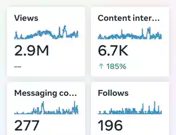
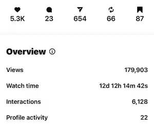
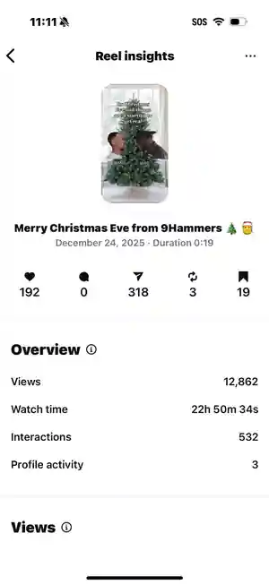

First, I found the real decision.
The homeowner wasn't choosing content. They were choosing who to trust with their home. That meant the marketing had to reduce uncertainty, demonstrate expertise and make the company easier to believe.
Maybe you're posting consistently and still not seeing enough inquiries. People are watching but not buying. A service you know is valuable isn't getting traction. Or you're investing time and money into social media without really knowing what's working.
I figure out where the disconnect is. I research the people you're trying to reach, what they're looking for, what they hesitate over, what builds their trust and what may be keeping them from taking the next step. Then I turn those insights into strategy designed around what your business actually needs to accomplish.
Show me how you think ↓Before they call, book, buy or even follow, they're deciding whether they need this, whether they trust you, whether it's worth the money and what happens if they choose wrong. Good marketing doesn't talk over those questions. It answers them. That's why I don't start with “What should we post this month?” I start with the person we're trying to move.
Where are you losing momentum? Maybe awareness is low. Maybe people are watching but not converting. Maybe a specific service isn't selling or your message sounds like everyone else's. We identify the business problem first.
I research beyond demographics. What are they searching for? What matters to them? What are they afraid of getting wrong? What have they already tried? What makes them skeptical?
I look for friction: confusion, weak differentiation, missing proof, lack of trust, too many choices or a value proposition people don't immediately understand.
Attention? Perception? Trust? Understanding? Demand? Action? We give the strategy a job before we give the business more content.
Messaging, positioning, content direction, campaigns and social strategy are built around what we learned, not whatever happens to be trending that week.
I watch what people view, ignore, share, question, click and respond to. That behavior tells us what to improve next.
I wasn't a roofing expert when I started. But the homeowner didn't need me to become one. They needed to know whether they could trust this company with one of the biggest investments they owned.
A roof isn't “content” to the person paying for it. It's their home, their money, their family, their stress and a decision they really don't want to get wrong. So instead of trying to make roofing interesting to me, I became interested in what made the decision important to them. That changed the content.
The homeowner wasn't choosing content. They were choosing who to trust with their home. That meant the marketing had to reduce uncertainty, demonstrate expertise and make the company easier to believe.
We could answer real questions, show the work, demonstrate expertise instead of claiming it and give homeowners reasons to stop, watch, remember and eventually reach out.
Organic content grew from thousands to millions of views and was tied to more than $220K in sales, separate from paid advertising.
I can tell you I know what I'm doing, but I'd rather show you. These are selected Instagram analytics from the work.




Who are we trying to reach? What matters to them? What are they worried about getting wrong? What would make them trust this company? What's stopping them from taking the next step?
I don't need to personally love roofing, home care, wellness or whatever industry comes next. I need to understand what your work means to the person deciding whether to choose you.
Before I write messaging, I want to see what people are actually asking. For home care, those questions become intensely personal. They aren't just content prompts. They're clues about what someone needs before they can feel comfortable saying yes.
How do I choose the right home care agency for my parent?Choosing care
Are the caregivers background checked and trained?Safety and screening
Will my parent have the same caregiver every visit?Consistency of care
What happens if their regular caregiver can't come?Reliability and backup care
I created a 2026 home care strategy playbook to give the company a foundation it could keep implementing after the handoff. Instead of leaving them with ideas, the goal was to leave them with a way to make better marketing decisions.
Before producing more content, the company needed clarity around who it was speaking to, what families needed to hear and how social media could support trust instead of becoming another task to keep up with.
The playbook was designed as a working reference: understand the audience, keep the message consistent, know what the content is trying to accomplish and have practical next steps the team can implement without guessing.
The client described the work as informative and concrete and said they were implementing the strategies daily. The testimonial shows actionability and implementation; I don't claim performance results that haven't been measured.
“It has been incredibly informative and has given us concrete steps to build our business social media presence. I have been working on implementing these strategies daily and I'm excited to see results over the next 30 days.”
People don't experience your marketing as a spreadsheet, funnel or content calendar. They experience attention, confusion, curiosity, risk, familiarity, trust, skepticism and desire. Behavioral science gives me a sharper way to question what's happening before someone acts.
I use those questions to make better marketing decisions. The lab is a small demonstration of how context can change perception.
Here, the softer blue works because it is paired with grounded language, dark contrast and an editorial type system. Change the category or surrounding cues and the perception can change too.
Maybe you're not getting enough leads. Maybe people know you exist but aren't converting. Maybe you've built something valuable and can't figure out how to communicate why it matters. Maybe social media is active but isn't contributing enough to the business. Maybe you're launching something new, growth has stalled or you're tired of paying for posts without knowing what they're supposed to accomplish.
Bring me the problem. I'll research the business, the audience and the gap between where you are and where you're trying to go. Then we'll determine what the marketing actually needs.
Clarity before more content. Diagnose what's getting in the way and identify the highest priority moves.
Built around your actual business.
Scope and final investment are confirmed before work begins.
A practical strategy built around your customer, positioning, messaging, platforms and next 30 days.
Built around your actual business.
Scope and final investment are confirmed before work begins.
Build perception intentionally through positioning, language, color, typography and context.
Built around your actual business.
Scope and final investment are confirmed before work begins.
Strategy led execution for select brands, with planning, copy, publishing and optimization.
Built around your actual business.
Scope and final investment are confirmed before work begins.
Your team handles execution. I make sure they're executing the right things.
Built around your actual business.
Scope and final investment are confirmed before work begins.
Why someone stopped scrolling. Why they trusted one company over another. Why something technically looked good but didn't move anybody. Why one message made someone feel understood and another sounded like an ad.
My background across sales, social media, client facing work and strategy kept bringing me back to the same thing: people. I care about the psychology behind their decisions, the data that tells us what they're actually doing and understanding the business well enough that the marketing still sounds like you when I'm done with it.
Because when you hand someone your marketing, you're handing them part of your company's reputation. I know how much that matters.
Talk strategy with me ↗Tell me what's working, what's not, what you're trying to grow and where you feel stuck. I'll start asking questions from there.
Tell me what's not working ↗